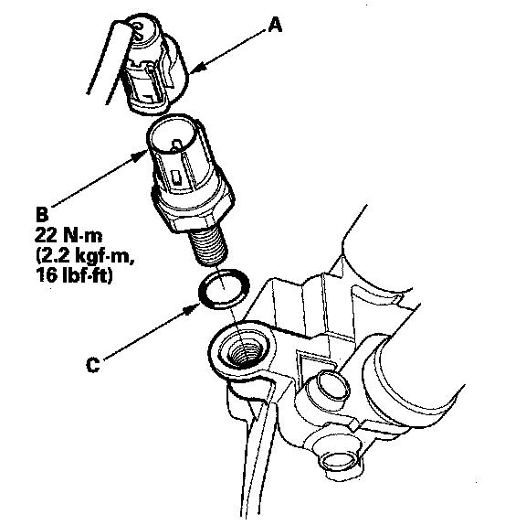

Variable Valve Timing Pressure Switch: Service and Repair
Rocker Arm Oil Pressure Switch Removal/Installation
1. Disconnect the rocker arm oil pressure switch connector (A), then remove the rocker arm oil pressure switch (B).
2. Install the parts in the reverse order of removal with a new O-ring (C).